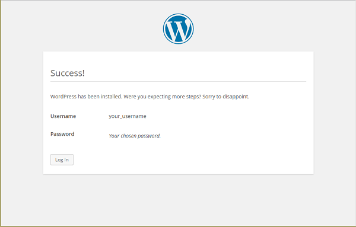
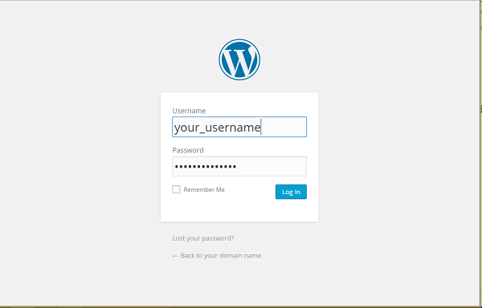
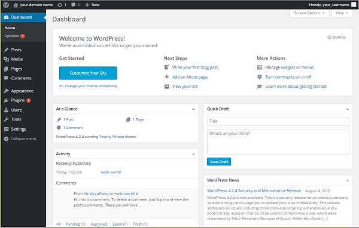

Installing Wordpress on a LAMP server for CentOS.
Install WordPress on your LAMP server - CentOS
Difficulty: 1
Time: 15 minutes
WordPress has become much more than its humble beginnings in 2003 as a self-hosted blogging tool; it is the Internet-s leading content management system (CMS). This open-source CMS powers all types of sites, including major brands such as The New Yorker, Variety, TechCrunch, and Best Buy. With a MySQL and PHP architecture, WordPress is easy to install and has endless options for website configuration thanks to tens of thousands of plugins and themes from its rich and active community.
This article will walk you through setting up WordPress on CentOS 6 or 7. The steps will be for a non-root user with sudo (administrator) privileges.
Prerequisites
Make sure that you have a non-root user with sudo (administrator) privileges set up on your CentOS server. You'll also need a Linux, Apache, MySQL, and PHP (LAMP) stack configured. Make sure that Apache, MySQL, and PHP are up and running. For a how-to on installing a LAMP stack on a specific server, see the following articles:
Make note of your MySQL root account (admin) password. You'll need it for these tasks.
- Restart Apache.
sudo service httpd restart
- Install
rsync, a reliable file transfer and synchronization program, if you don't already have it.
sudo yum install rsync
- Also, make sure you have these PHP extensions installed.
sudo yum install -y php-gd php-fpm
Create a MySQL database and administrator for WordPress
Set up your MySQL database with an administrator so that WordPress has a place to store all your site and user information.
Remember: All MySQL code statements must end with a semi-colon (;).
- Log into your MySQL admin account.
mysql -u root -p
- At the prompt, enter your MySQL root password.
- At the MySQL prompt, create your WordPress database. For this tutorial, we'll use the database name wordpress.
CREATE DATABASE wordpress;
- Create the database administrator account and set the user's credentials. For this tutorial, we'll use wordpressadmin as the example username, and wordpresspassword as the password.
CREATE USER wordpressadmin@localhost IDENTIFIED BY 'wordpresspassword';
As a good security practice, create a strong password. Keep your username and password handy, as you'll need them later.
- Give, or grant, your admin permissions to the database.
GRANT ALL PRIVILEGES ON wordpress.* TO wordpressadmin@localhost;
GRANT is one of the account management statements the MySQL server notices and loads into memory right away. A manual reload/restart should not be necessary. But, if you'd like, you can check the permissions using SHOW GRANTS.
SHOW GRANTS FOR 'wordpressadmin'@'localhost';
-
If for some reason the privileges didn't take, flush the privileges to activate the user. Flush forces a reload of the cache.
FLUSH PRIVILEGES;
You're finished! Exit MySQL to bring you back to your normal command prompt.
exit
Download WordPress
Your system is now ready to install WordPress into your directory. WordPress is available in a tar.gz or zip format. We will be getting the tar.gz file.
- Download the WordPress files from the official site using the
wget command.
cd ~
wget http://wordpress.org/latest.tar.gz
This URL will always link to a compressed file of the latest stable version of WordPress.
- Extract, or untar, the application directory.
tar xzvf latest.tar.gz
This command creates the directory wordpress in your home directory.
Configure WordPress
- Go into the
WordPress directory you just unpacked.
cd ~/wordpress
- Edit the following lines with the values in wp-config.php.
cp wp-config-sample.php wp-config.php
- Open the config file in your text editor.
vim wp-config.php
- Look for this section of the code below (starting with
MySQL settings… and enter your corresponding values of the three DB_ variables (database name, database username, mysql root password) with the credentials you just created.
// ** MySQL settings - You can get this info from your web host ** //
/** The name of the database for WordPress */
define('DB_NAME', 'wordpress');
/** MySQL database username */
define('DB_USER', 'wordpressadmin');
/** MySQL database password */
define('DB_PASSWORD', 'wordpresspassword');
- Save and close.
Copy files to document root
After you've configured WordPress, transfer the files to Apache's root directory so that the application can serve content to your site visitors.
- Transfer your WordPress files using
rsync.
sudo rsync -avP ~/wordpress/ /var/www/html/
This will safely copy all of the contents from the directory you unpacked to the document root.
- Change ownership to Apache and grant the permissions so that WordPress can auto-update content.
sudo chown -R apache:apache /var/www
sudo chmod 775 /var/www
Enable use of .htaccess
In configuring PHP-based applications, URL rewrites must be enabled by way of an .htaccess file.
AllowOverride All allows all options in your .htaccess file. We're going to make sure this is set to All.
- Open your
httpd.conf file.
sudo vim /etc/httpd/conf/httpd.conf
- Find the
<Directory /> section. Underneath it is AllowOverride. In this line, change None to All.
AllowOverride All
- Save and close the file.
- Restart Apache.
sudo service httpd restart
Install WordPress
Good news: The rest of your installation will be done through the WordPress web interface.
- Enter your server-s domain name or public IP address in your web browser.
http://your IP
At the WordPress configuration page, fill out your information to create your administrator account.

-
WordPress confirms your installation by displaying your username and password.

-
Click Log In WordPress prompts you to log in with your new credentials.

All done! You-ll be taken to the dashboard of your new site.

Next steps
Congratulations! You have installed WordPress and created the beginning of your own website.
From here you have many options for customizing your WordPress setup. A popular one is making pretty permalinks. See Set up WordPress Pretty Permalinks on Apache - ALL DISTROS for a step-by-step guide.
For a how-to on installing WordPress on a LEMP stack, see Install WordPress on your LEMP server - CentOS.